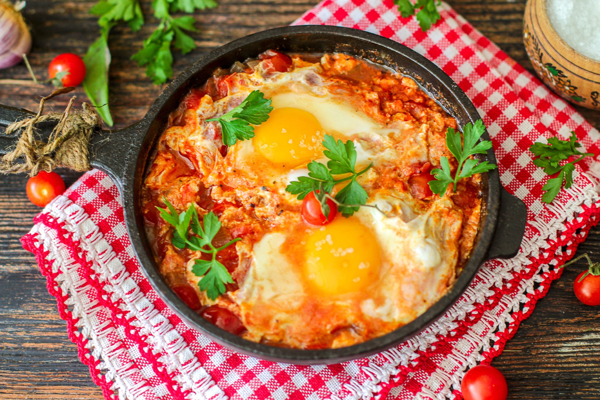

На розігріту пательню додати масло та порізану напівкільцями цибулю, смажити до прозорого стану.
Додати порізаний соломкою солодкий перець, черех хвилину додати порізаний напівкільцями помідор.
Вбити яйця, посолити та поперчити за смаком.
123 load new commit 123 +new comit +new comit +new comit